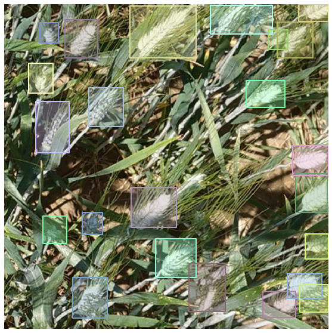

Custom Parsers
from mantisshrimp.imports import *
from mantisshrimp import *
import pandas as pd
Understand the data format
In this task we were given a .csv file with annotations, let's take a look at that.
source = Path("/home/lgvaz/.data/wheat")
df = pd.read_csv(source / "train.csv")
df.head()
| image_id | width | height | bbox | source | |
|---|---|---|---|---|---|
| 0 | b6ab77fd7 | 1024 | 1024 | [834.0, 222.0, 56.0, 36.0] | usask_1 |
| 1 | b6ab77fd7 | 1024 | 1024 | [226.0, 548.0, 130.0, 58.0] | usask_1 |
| 2 | b6ab77fd7 | 1024 | 1024 | [377.0, 504.0, 74.0, 160.0] | usask_1 |
| 3 | b6ab77fd7 | 1024 | 1024 | [834.0, 95.0, 109.0, 107.0] | usask_1 |
| 4 | b6ab77fd7 | 1024 | 1024 | [26.0, 144.0, 124.0, 117.0] | usask_1 |
At first glance, we can make the following assumptions:
Multiple rows with the same object_id, width, height
A different bbox for each row
* source doesn't seem relevant right now
Once we know what our data provides we can create our custom Parser.
Create the Parser
When creating a Parser we inherit from smaller building blocks that provides the functionallity we want:
DefaultImageInfoParser: Will parse standard fields for image information, e.g. filepath, height, width
FasterRCNNParser: Since we only need to predict bboxes we will use a FasterRCNN model, this will parse all the requirements for using such a model.
We can also specify exactly what fields we would like to parse, in fact, the parsers we are currently using are just helper classes that groups a collection of individual parsers.
We are going to see how to use individual parsers in a future tutorial.
class WheatParser(DefaultImageInfoParser, FasterRCNNParser):
def __init__(self, df, source):
self.df = df
self.source = source
self.imageid_map = IDMap()
def __iter__(self):
yield from self.df.itertuples()
def __len__(self):
return len(self.df)
def imageid(self, o) -> int:
return self.imageid_map[o.image_id]
def filepath(self, o) -> Union[str, Path]:
return self.source / f"{o.image_id}.jpg"
def height(self, o) -> int:
return o.height
def width(self, o) -> int:
return o.width
def labels(self, o) -> List[int]:
return [1]
def bboxes(self, o) -> List[BBox]:
return [BBox.from_xywh(*np.fromstring(o.bbox[1:-1], sep=","))]
Defining the __init__ is completely up to you, normally we have to pass our data (the df in our case) and the folder where our images are contained (source in our case).
We then override __iter__, telling our parser how to iterate over our data. In our case we call df.itertuples to iterate over all df rows.
__len__ is not obligatory but will help visualizing the progress when parsing.
And finally we override all the other methods, they all receive a single argument o, which is the object returned by __iter__.
Now we just need to decide how to split our data and Parser.parse!
data_splitter = RandomSplitter([.8, .2])
parser = WheatParser(df, source / "train")
train_rs, valid_rs = parser.parse(data_splitter)
HBox(children=(FloatProgress(value=0.0, max=147793.0), HTML(value='')))
Let's take a look at one record.
show_record(train_rs[0], label=False)

Conclusion
And that's it! Now that you have your data in the standard library record format, you can use it to create a Dataset, visualize the image with the annotations and basically use all helper functions that Mantisshrimp provides!